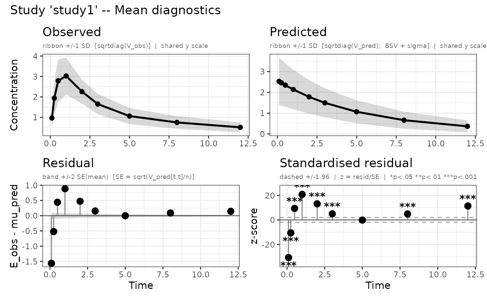
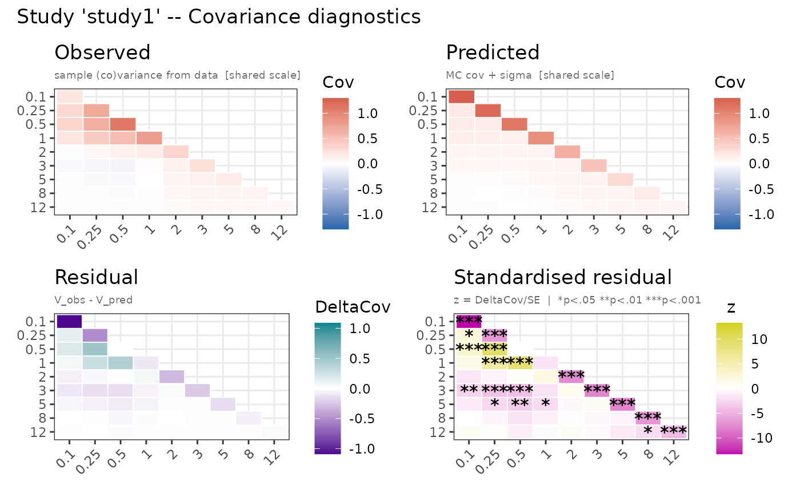
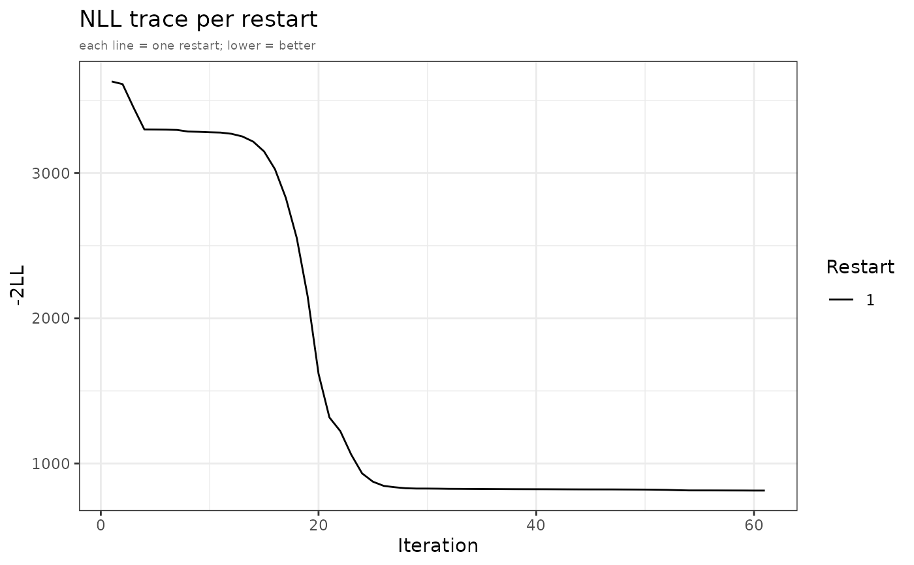
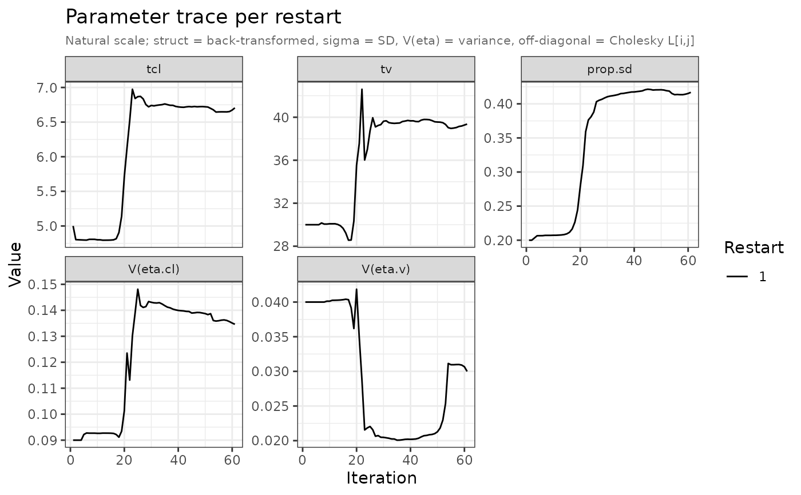

Generates up to four diagnostic panels:
Arguments
- x
An
admFitobject returned bynlmixr2()withest = "adfo",est = "admc",est = "adgh", orest = "adirmc".- which
Character vector selecting which panel types to produce. Any subset of
c("mean", "cov", "nll", "par"). Defaults to all four.- n_sim
Number of MC samples for the final prediction. Defaults to the value used during fitting. Only used when
"mean"or"cov"is inwhich.- seed
Random seed for reproducibility.
- ...
Unused.
Value
A named list of ggplot2 objects, invisibly. Prints each selected
top-level panel. For the "mean" and "cov" panels the returned list also
contains each sub-panel individually so a single panel (or a few) can be
extracted in code without reprinting the whole grid. Elements can be pulled
out by name – plot(fit, which = "mean")$mean_study1_pred or
plot(fit, which = "cov")$cov_study1_std_resid – or by position, with the
combined 2x2 grid stored first per study
(plot(fit, which = "mean")[[1]] is the full grid, [1] the length-1
named sub-list). The sub-panel keys are <type>_<study>_obs, _pred,
_resid, and _std_resid; the combined grid stays under <type>_<study>.
The extra sub-panel keys are not printed on their own.
Details
"mean"– Observed vs predicted mean per study (2x2 grid). Upper row: observed and predicted mean lines with +/-1 SD ribbon on a shared y scale (black throughout). Lower row: raw residual lollipop with +/-2 SE band and standardised residual z-scores with +/-1.96 reference lines."cov"– Observed vs predicted (co)variance heatmaps per study (2x2 grid). Upper row shares a common colour scale (blue-white-red). Lower row uses distinct diverging scales: residual (red-white-green) and standardised residual (gold-white-purple). Significance stars overlaid on the standardised residual panel."nll"– NLL trace per restart over optimizer evaluations. Restarts coloured with the Okabe-Ito palette."par"– Parameter trace per restart on the natural scale (struct thetas back-transformed, sigma as SD, omega diagonal as variance labelledV(eta.x)). Facets ordered as in the modelini()block. Restarts coloured with the Okabe-Ito palette.
Aggregate data slot
Every admixr2 fit also carries the observed and predicted aggregate data in
fit$env$aggData, a named list with one entry per study. Each entry holds the
observation times, the study n, and two moment sets – obs (from the
data) and pred (predicted at the fitted parameters) – each a list with the
mean vector E and the (co)variance matrix V:
fit$env$aggData$study1$obs$E # observed mean vector
fit$env$aggData$study1$obs$V # observed covariance matrix
fit$env$aggData$study1$pred$E # predicted mean vector
fit$env$aggData$study1$pred$V # predicted covariance matrixThe predicted moments are computed by one MC simulation at the fitted
parameters using the fit's own n_sim and a fixed seed, so they match the
default plot(fit) mean/cov panels. The slot is absent only when the fit
cannot be simulated (no simulation model available).
nlmixr2 traceplot()
admixr2 fits also plug into the nlmixr2 traceplot() generic. During fitting
the parameter iteration history of the best restart is stored on the fit in
the standard parHistData slot (natural scale), so traceplot(fit) produces
the familiar per-parameter, free-y facetted trace used elsewhere in the
nlmixr2 ecosystem. There is no burn-in marker (admixr2 records optimizer
evaluations, not SAEM iterations), and only the best restart is shown – the
per-restart overlay and the NLL trace remain available via
plot(fit, which = c("par", "nll")). The trace stores only improving
evaluations (steps that lowered the best NLL), so the iter axis indexes
those improvement steps rather than raw optimizer iterations.
Examples
# \donttest{
library(rxode2)
library(nlmixr2)
data("examplomycin")
obs <- examplomycin[examplomycin$EVID == 0, ]
obs <- obs[order(obs$ID, obs$TIME), ]
times <- sort(unique(obs$TIME))
ids <- unique(obs$ID)
dv_mat <- do.call(rbind, lapply(ids, function(i) {
sub <- obs[obs$ID == i, ]; sub$DV[order(sub$TIME)]
}))
E <- colMeans(dv_mat)
V <- cov.wt(dv_mat, method = "ML")$cov
pk_model <- function() {
ini({
tcl <- log(5); tv <- log(30)
prop.sd <- c(0, 0.2)
eta.cl ~ 0.09; eta.v ~ 0.04
})
model({
cl <- exp(tcl + eta.cl)
v <- exp(tv + eta.v)
d/dt(central) <- -(cl/v) * central
cp <- central / v
cp ~ prop(prop.sd)
})
}
fit <- nlmixr2(
pk_model, admData(), est = "adfo",
control = adfoControl(
studies = list(study1 = list(E = E, V = V, n = length(ids),
times = times, ev = et(amt = 100))),
maxeval = 100L
)
)
#>
#>
#>
#>
#> ℹ parameter labels from comments are typically ignored in non-interactive mode
#> ℹ Need to run with the source intact to parse comments
#> === admixr2: Aggregate Data Modeling (FO) ===
#> Obs units: 1 | Params: 5 | Cores: 2 | Grad: none | Restarts: 1
#> +----------+----------+----------+----------+----------+----------+----------+
#> | | -2LL | tcl | tv | prop.sd | eta.cl | eta.v |
#> +----------+----------+----------+----------+----------+----------+----------+
#> | 0010 | 1.5e+30 | 5 | 1 | 0.2 | 0.09 | 0.04 |
#> | 0020 | 3878.99 | 4.803 | 31.64 | 0.2 | 0.09 | 0.04 |
#> | 0030 | 3303.72 | 4.806 | 30.1 | 0.2068 | 0.09261 | 0.04 |
#> | 0040 | 2828.57 | 4.816 | 28.56 | 0.2164 | 0.09217 | 0.04034 |
#> | 0050 | 931.70 | 6.841 | 37 | 0.381 | 0.1389 | 0.02184 |
#> | 0060 | 828.72 | 6.712 | 39.14 | 0.4072 | 0.1429 | 0.02032 |
#> | 0070 | 822.99 | 6.742 | 39.64 | 0.4167 | 0.1405 | 0.02019 |
#> | 0080 | 821.51 | 6.716 | 39.82 | 0.422 | 0.1389 | 0.02072 |
#> | 0090 | 816.00 | 6.677 | 39.33 | 0.4187 | 0.1361 | 0.02537 |
#> | 0100 | 813.39 | 6.705 | 39.36 | 0.4168 | 0.1346 | 0.02999 |
#> | 0102 ✓ | 813.39 | 6.705 | 39.36 | 0.4168 | 0.1346 | 0.02999 |
#> | 0.9 sec | | | | | | |
#> Computing covariance (R method, 19 NLL evaluations)
#> Note: covMethod='r' computes covariance for structural and sigma parameters only; omega (IIV) SEs are not computed (matching nlmixr2 FOCEI behavior).
#> → compress origData in nlmixr2 object, save 1160
#>
#>
plot(fit)




# }